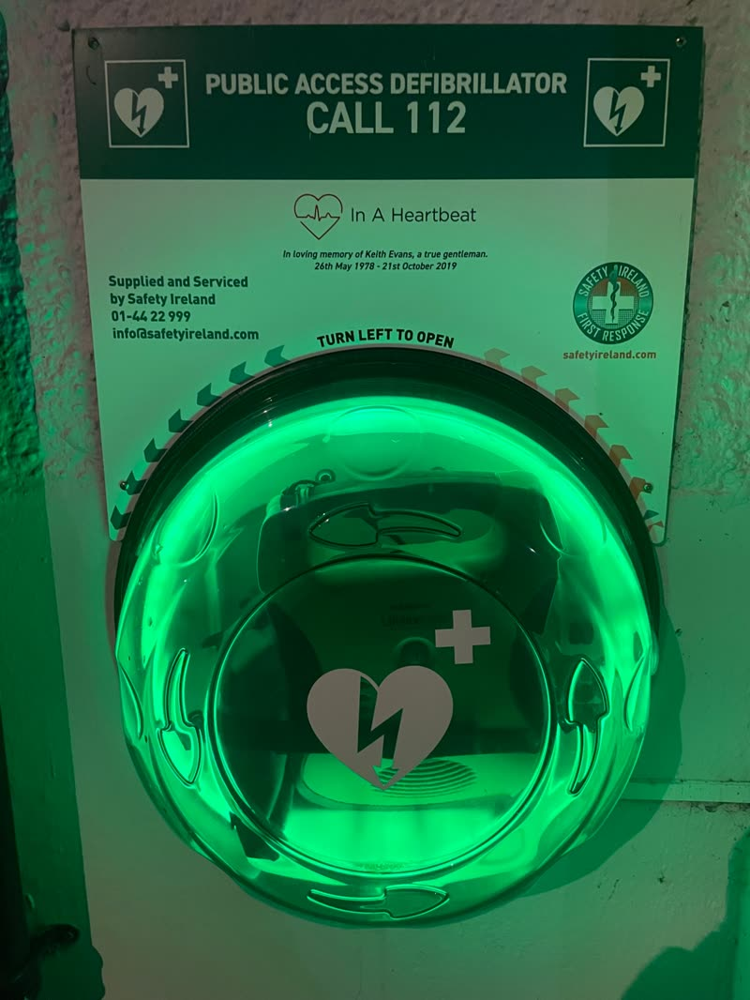
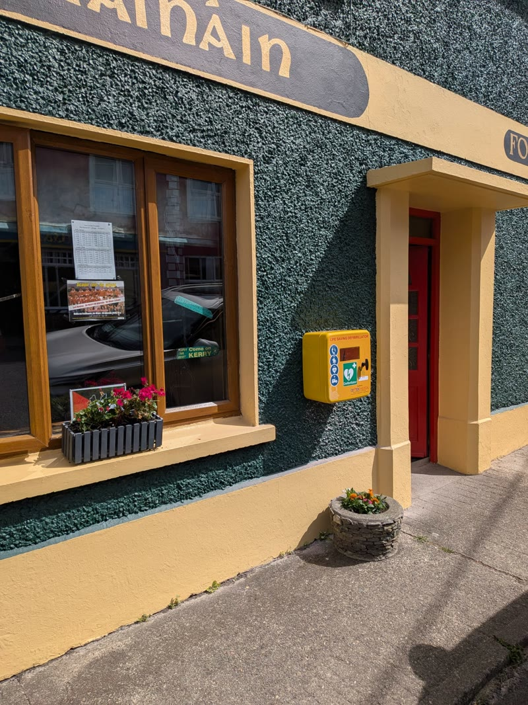

AED locations
Find a defibrillator in and around Dingle
25 public-access AEDs from Dunquin to Lispole. Let your phone find the closest one, or tap a pin on the map below.
Your location is used once, on your phone, to work out distances. It is never sent to us or stored.
Spotted a damaged or missing defibrillator, or a pin in the wrong place?
Please let us know so we can fix it quickly. Email cfrdingle@gmail.com
In an emergency, always dial 112 or 999 first.
The ambulance dispatcher will tell you where your nearest accessible AED is and give you the access code if the cabinet is locked. They will also send our responders.
Every location
All 25 AEDs by area
Each one links straight to directions in Google Maps. Locations last updated 2026.


What to look for
Look for the green AED sign
Most of our AEDs are kept in yellow or green cabinets on the outside walls of pubs, shops, halls and schools, marked with the green heart and lightning sign. A few are indoors or on fences: check the note beside each one in the list above.
Some cabinets are locked: the 112 dispatcher gives you the code. Once you open the AED, it talks you through every step.